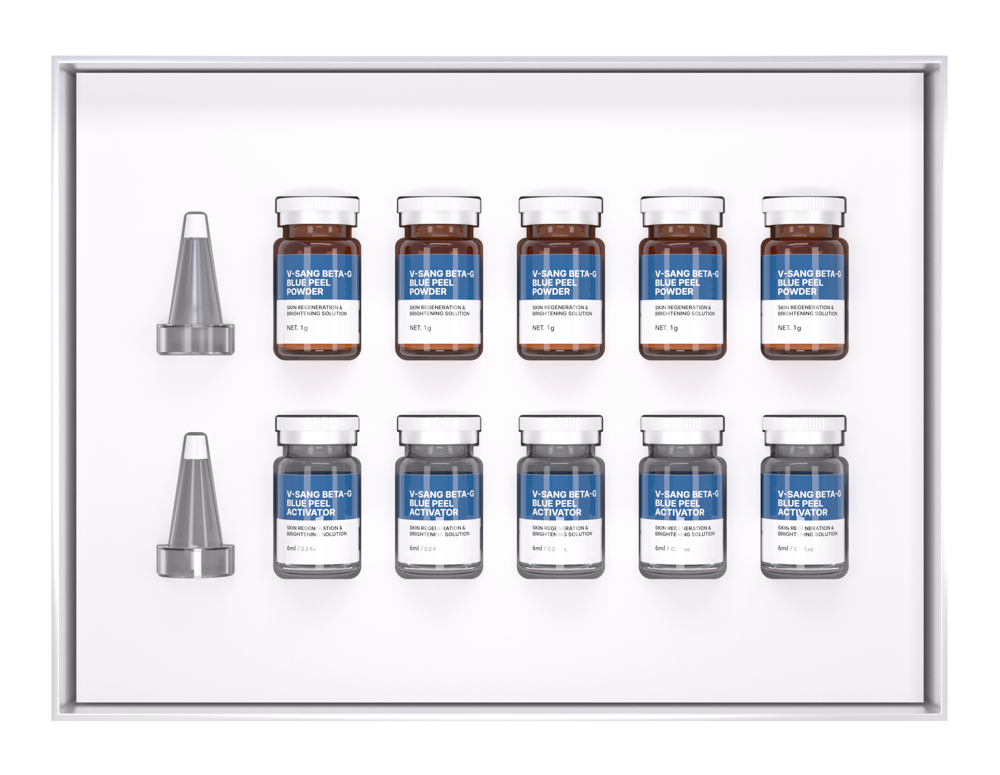
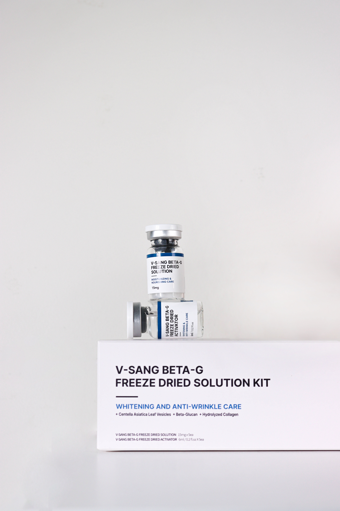
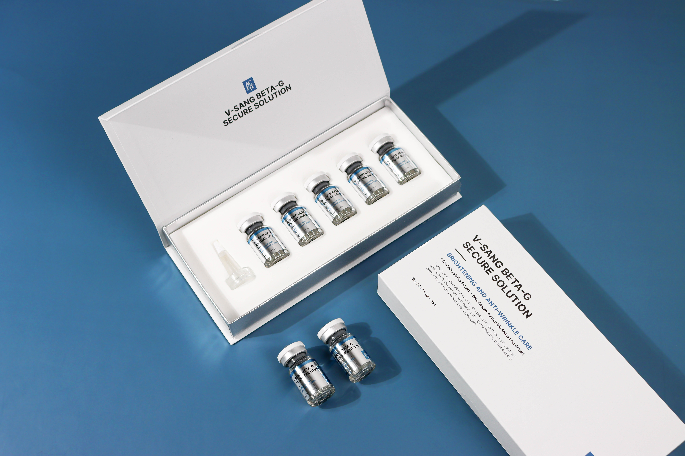

TREATMENT 01
ブルーピール（Bluepeel Solution）
カラミン・自然由来エキス・ヒアルロン酸を贅沢に配合したマイルドピーリングソリューション。剥離や過度な刺激を抑えながら、毛穴詰まりやざらつきの原因となる古い角質をやさしくオフし、キメの整ったなめらかな素肌へ導きます。
サロンでの主なケア用途
毛穴の詰まり・ごわつき・くすみが気になる肌への角質ケア＆鎮静トリートメントとして使用。その後に導入する美容成分の肌なじみを高める土台づくりを担います。

TREATMENT 02
フリーズドライアンプル（Freeze Dried Solution）
ビタミンC・ツボクサエキス・ヒアルロン酸・コラーゲンなどのピュアな美容成分を、フリーズドライ製法でフレッシュな状態のまま閉じ込めた集中ケアアンプルです。施術直前に溶かして使用することで、角質層のすみずみまで豊かなうるおいを届けます。
サロンでの主なケア用途
インナードライ（ベタつくのに乾燥する肌）やハリ不足・乾燥くすみが気になる肌への集中水分チャージ＆透明感ケアとして使用します。

TREATMENT 03
セキュアアンプル（Beta-G Secure Solution）
ナイアシンアミド・ペプチド・コラーゲン・ツボクサエキス・チャ葉水を配合した集中コンディショニングアンプル。乾燥や外部刺激によってゆらぎやすいデリケートな肌をうるおいで守りながら、すこやかで澄んだ肌印象へと導きます。
サロンでの主なケア用途
ゆらぎ肌・肌荒れ後のアフターケア・赤みが出やすい敏感傾向の肌を落ち着かせ、キメを整える鎮静コンディショニング施術に使用します。